Imani, Yaritza, Amara, Naia — Jamaïque, Cuba, République dominicaine, Trinité-et-Tobago
Peau dorée foncée, cheveux tressés, yeux noisette, sourire radiant. Seven Mile Beach, musique reggae, soleil caribéen, l'énergie jamaïcaine.
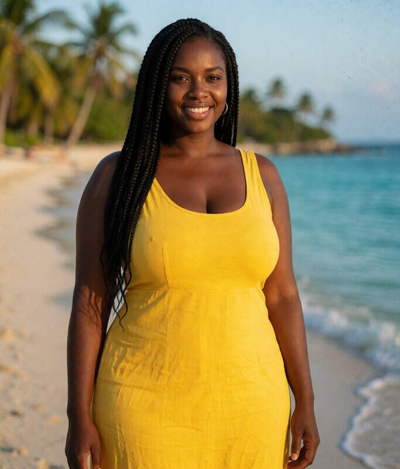
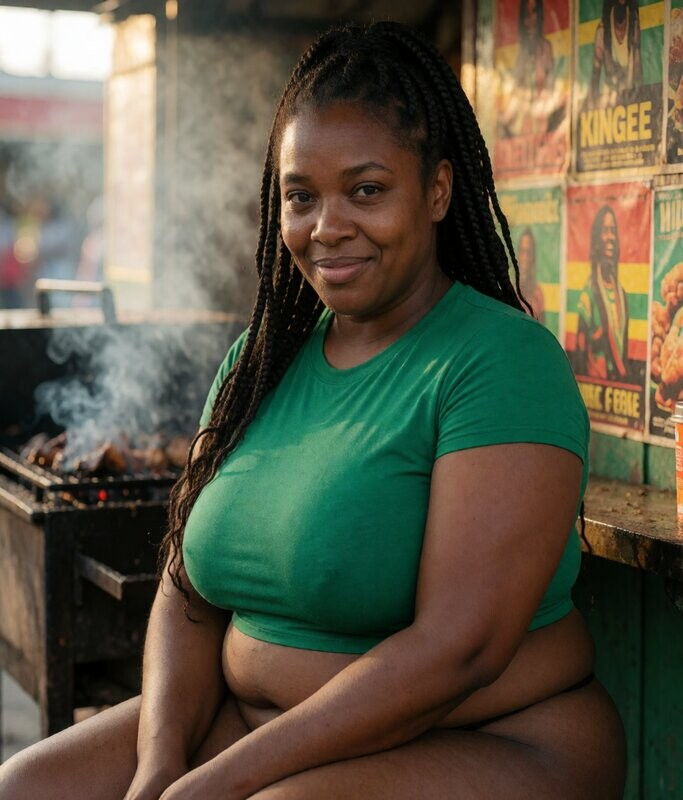
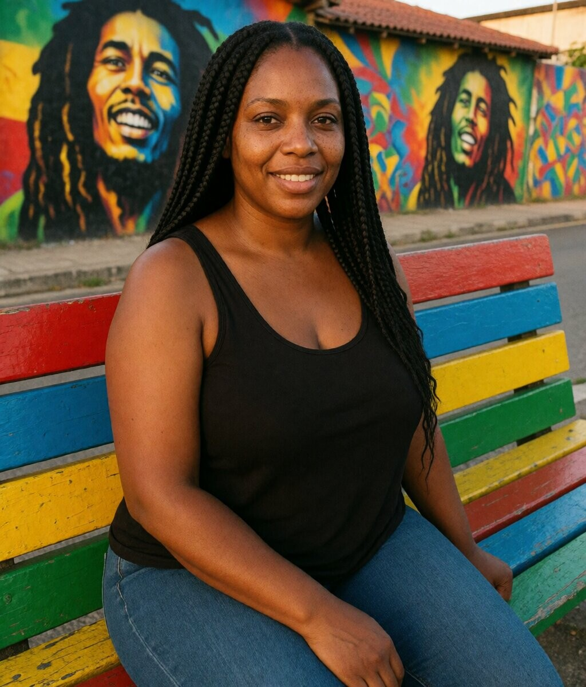
Peau métissée, cheveux noirs bouclés, yeux bruns, lèvres pleines. Habana Vieja, Malecón au coucher, voitures vintage, l'âme cubaine.
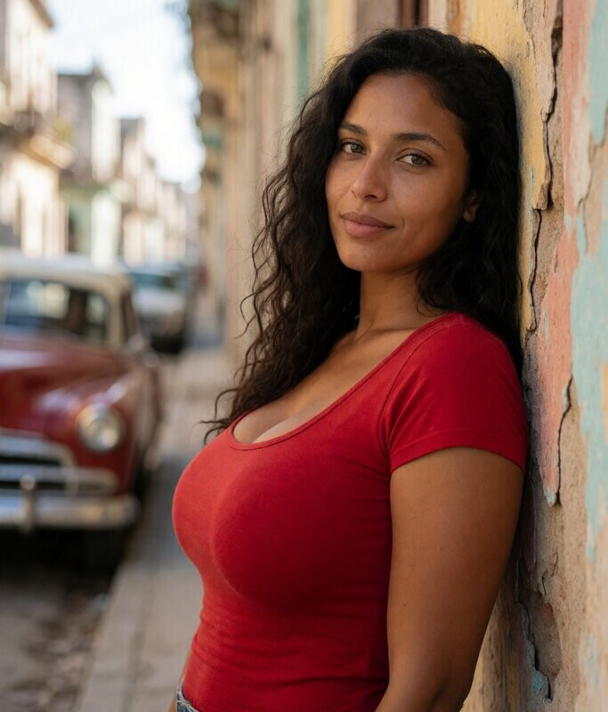
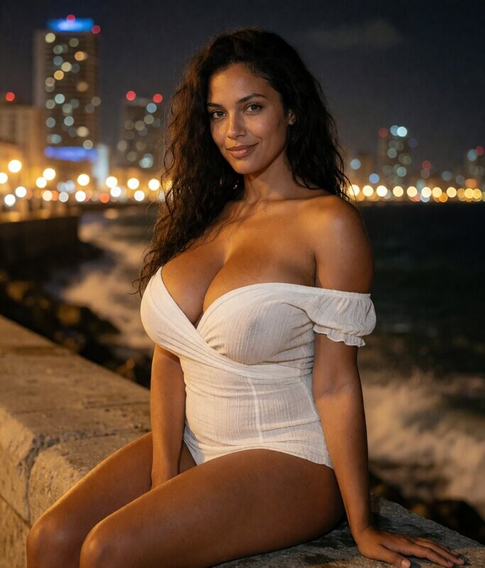
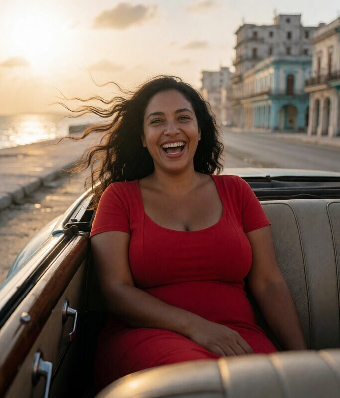
Peau caramel, cheveux bruns mi-long bouclés, yeux ambre, sourire chaud. Plage de Boca Chica, palmiers, turquoise, la chaleur dominicaine.
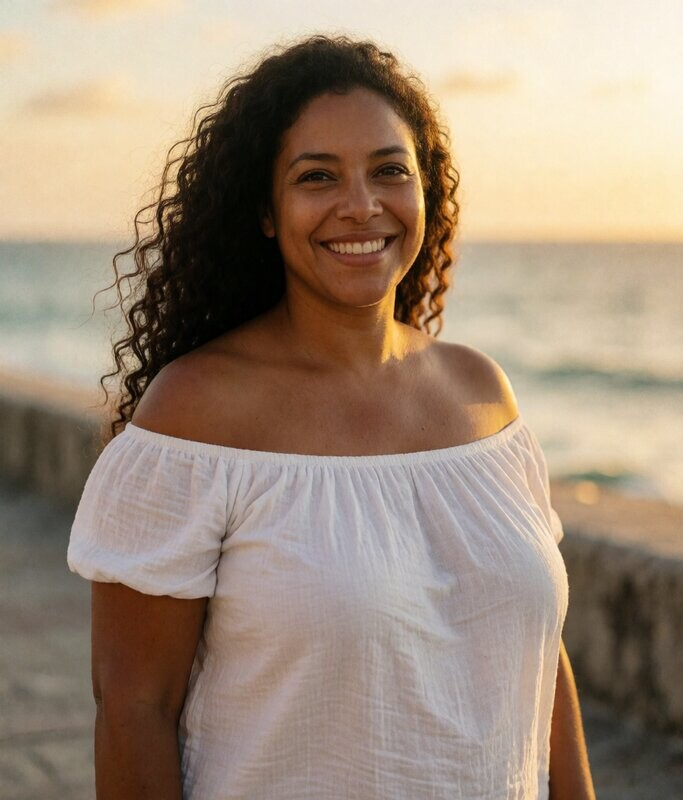
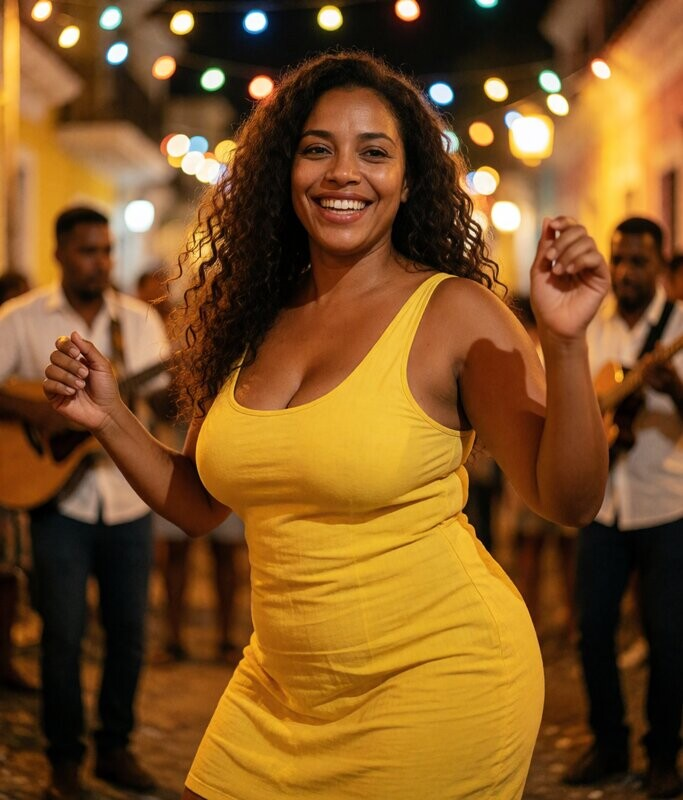
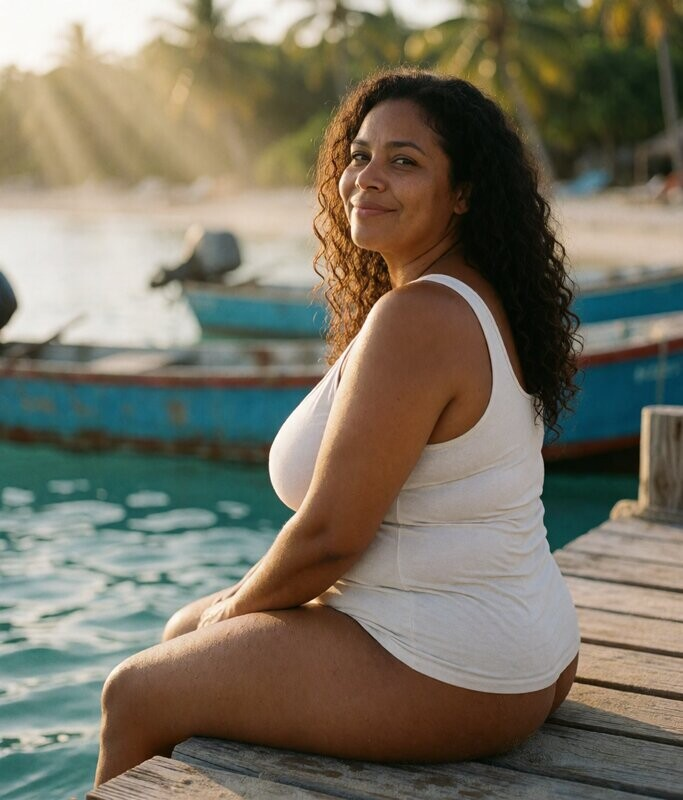
Peau dorée, cheveux noirs mi-long, yeux bruns profonds, allure fière. Maracas Bay, carnival, couleurs vibrantes, l'esprit trinidadien.
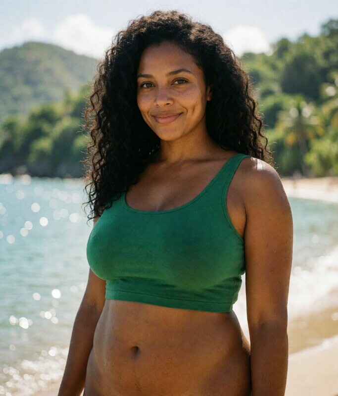
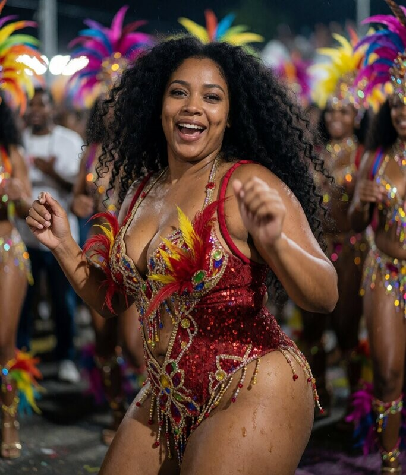
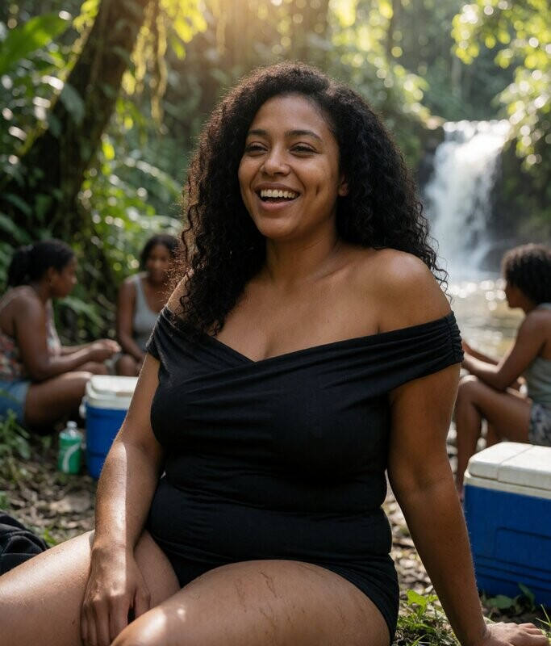